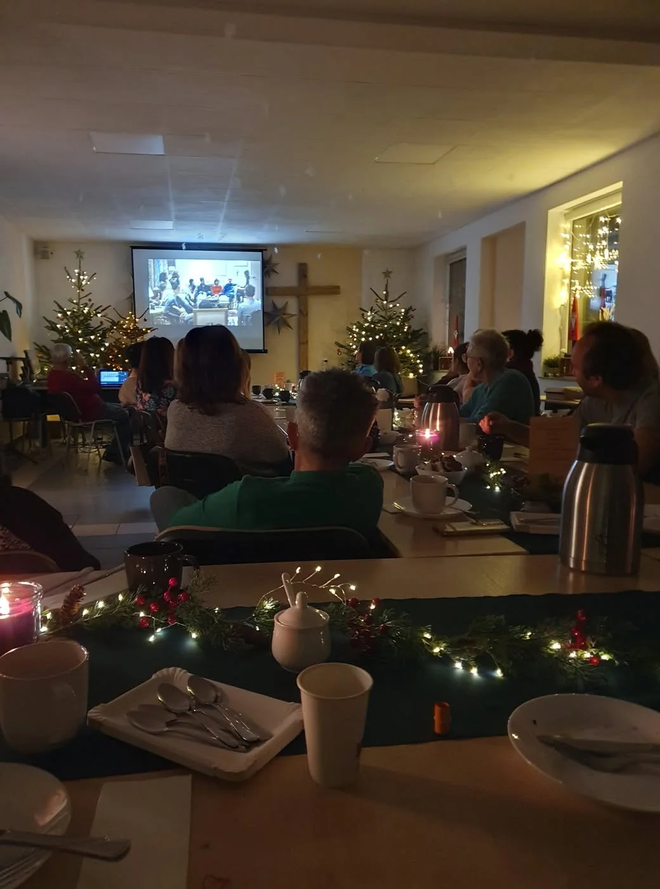

Kolacja
Spotkanie zaczyna się przy stole. Jedzenie pomaga zwolnić, poznać imiona i zbudować zwyczajną relację.
30 min
Czym jest Alpha?
Alpha to seria jedenastu spotkań oraz Dnia lub weekendu Alpha. Każde spotkanie ma prosty rytm: wspólny posiłek, film i rozmowa w małej grupie.
Jak wygląda spotkanie?
Prosty rytm pomaga się poznać, usłyszeć inspirujące treści i swobodnie o nich porozmawiać.
Spotkanie zaczyna się przy stole. Jedzenie pomaga zwolnić, poznać imiona i zbudować zwyczajną relację.
30 min
Krótki materiał wprowadza temat: kim jest Jezus, po co się modlić, jak czytać Biblię i gdzie w tym wszystkim jest Duch Święty.
30 min
Nie ma odpytywania ani przekonywania na siłę. Można dzielić się własnym zdaniem, pytać, wątpić lub słuchać.
45–60 min

Dla kogo?
Alpha powstała z myślą o osobach niewierzących, poszukujących albo wracających do pytań o wiarę. Nie trzeba znać modlitw, nauczania Kościoła ani mieć gotowego stanowiska.
Tematy spotkań
Każdy temat zaczyna się od filmu, ale najważniejsza jest rozmowa i pytania uczestników.
Nasza droga
Alpha rozpoczęła się w kościele HTB w Londynie. Dziś ten sam prosty rytm — posiłek, film i rozmowa — pomaga ludziom spotykać się także w Lubecku.
Nicky Gumbel pomógł nadać Alpha formę, którą znamy dzisiaj, i rozwinąć ją na całym świecie.
Najczęstsze pytania
Nie. Alpha ma charakter chrześcijański i ekumeniczny. Jest prowadzona w różnych tradycjach Kościoła, a w Lubecku działa w środowisku katolickim.
Nie. Alpha jest szczególnie otwarta na osoby, które są daleko od Kościoła, mają wątpliwości albo dopiero zaczynają szukać.
Nie, nie trzeba.
Podstawowa wersja Alpha jest przeznaczona dla osób dorosłych. Istnieje również specjalna edycja Alpha dla młodzieży.
Rolą gospodarza jest słuchać i pomagać w rozmowie. Alpha nie jest debatą ani egzaminem z wiary.
Nie. Udział w Alpha jest bezpłatny. Gospodarze Alpha zapewniają środki potrzebne do przygotowania edycji.
Filmy są gotowe i dostępne po zarejestrowaniu kursu na stronie Poprowadź Alpha ↗.
Regularność pomaga zbudować relacje i przejść całą drogę tematów. Jeśli jednak nie możesz być raz czy dwa, porozmawiaj z organizatorami.
Skorzystaj z oficjalnej wyszukiwarki: znajdź Alpha w swojej okolicy ↗. Możesz też napisać do nas — jeśli nie prowadzimy aktualnie edycji dla uczestników, pomożemy Ci poszukać odpowiedniego kursu.